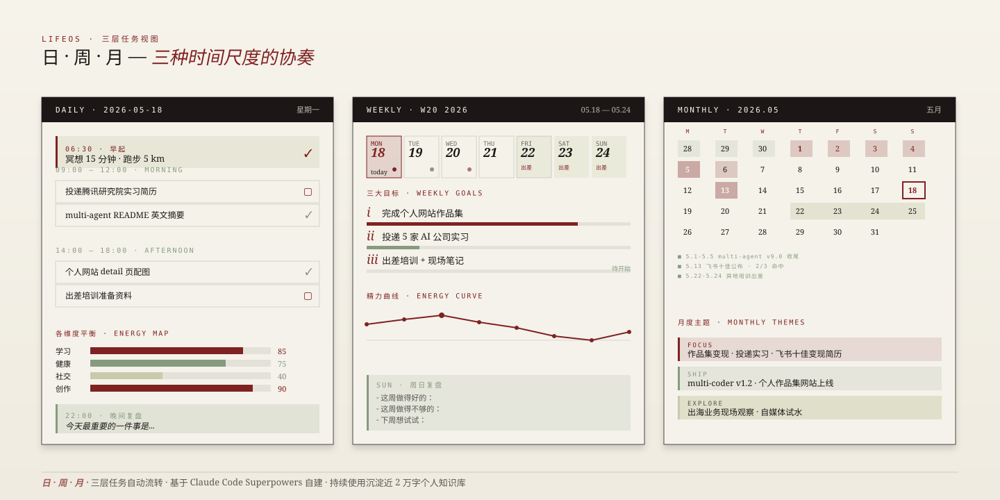
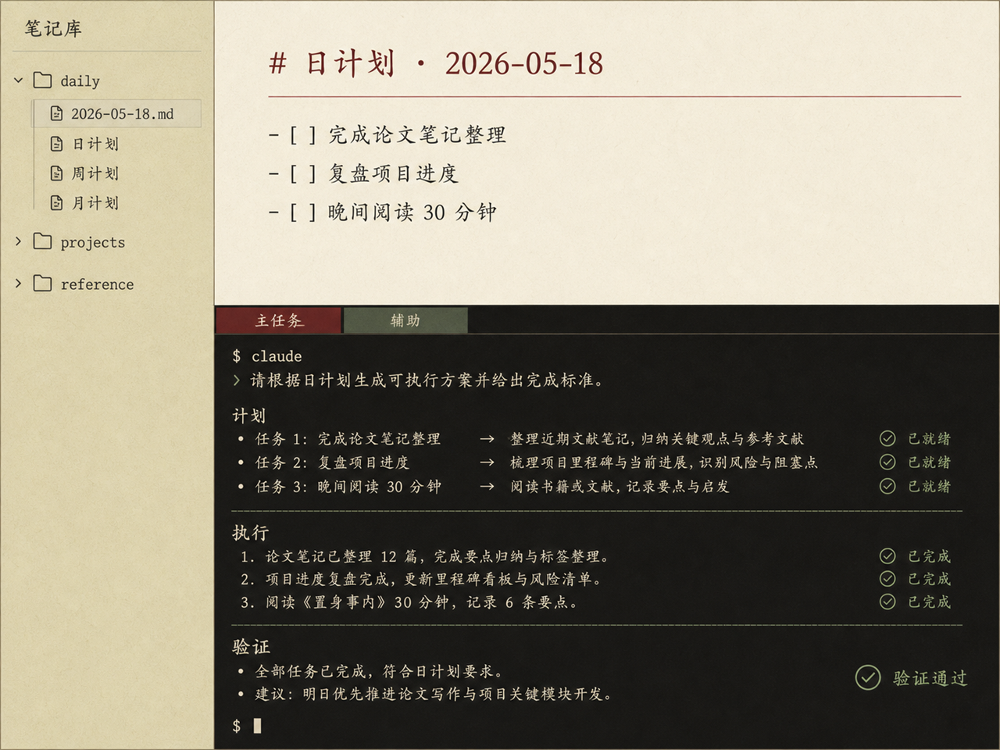
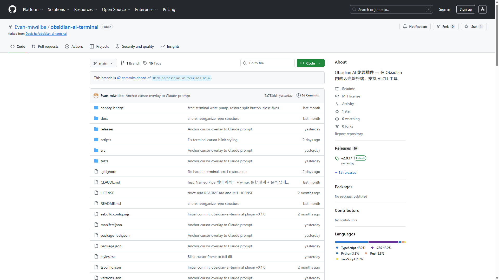

※ Schematic visualization · 真实 Obsidian 截图待补充
退伍回来读大三那年，我试过很多生产力工具。Excel 做日程——每周一张表，每周都从零开始； Notion 模板——好看但用一个月就懒得维护；付费插件——评估了几款 Obsidian 商业模板， ROI 不够高。
2026 年 3 月，Claude Code Superpowers 功能上线后， 我意识到一件事：我自己就能写一套—— 用自然语言描述我想要的结构，让 Claude 生成 Dataview / Templater 代码， 不满意就再迭代一遍。
核心设计是"时间粒度的镜头"——你今天关注什么、本周要推进什么、 本月的方向，是三个不同尺度的问题。一张表无法同时回答它们。
早起冥想 / 番茄钟任务 / 晚间复盘 / 精力评分 / 各维度平衡分析（工作/学习/休息/运动）。每天填一次，30 秒。
任务跨日流转 / 周完成率 / 周目标对齐 / "5/6 模式"（如简历投递在哪天推进了多少）。周日复盘 15 分钟。
悬浮预览本月所有进行中项目 / 阶段性目标 / 习惯打卡曲线 / 各维度平衡总分。月底复盘 30 分钟。
支持任务拖拽 / 跨周流转 / 月计划悬浮预览。 所有逻辑都用 Dataview + Templater 实现，没用任何付费插件。
做 LifeOS 的过程中，我需要在 Obsidian 里直接运行 shell 命令（同步 GitHub、跑 skill、查文件）。 Obsidian 原生没有终端，社区有一个韩国开发者开源的插件，但 UX 不够好—— 没有主题色适配、不支持 Tab 多页、不能分屏、复制路径要手动操作。
所以我把它二次开发了：
这个细节我经常拿出来讲——它最能说明"我不是 CS 科班，但能读懂 + 修改别人的代码"。 二开开源项目这一步对非科班来说是有门槛的，跨过去才能从"AI 工具的使用者"变成"AI 工具的延展者"。


LifeOS 不是 demo——是我每天打开 8 小时以上的工具。 过去 2 个月，知识库累积了将近 20,000 字的内容： 读书笔记、项目复盘、日常思考、随笔草稿。
日计划完成率不是 100%——也不应该是。30% 的完成率配合"5/6 模式"（简历投递这种关键任务持续推进）， 比 100% 的待办列表更接近"真实生活的样子"。
Multi-Agent Research 的用户只有我，但是是"研究的我"。 LifeOS 的用户也只有我，但是"过日子的我"。 两个项目都没有外部用户，但前者是工具，后者是生活——这是不同的两件事。
整套 LifeOS 没有一行代码是我"完全独立"写的—— 每一段 Dataview 查询、每一个 Templater 脚本， 都是我和 Claude Code 反复对话出来的。
但这不意味着这套系统不是我的。 每一个视图的设计、每一个字段的取舍、每一次迭代的方向， 都是我基于自己的使用感受决定的。AI 是放大器， 方向感是我的。
这个区别面试官能看出来。"AI 让我做出来"这种姿态， 比"我精通某框架"更接近 AI 时代的真实能力—— 因为后者很快会被工具替代，而前者是任何工具都替代不了的： 有 taste，知道自己要什么。